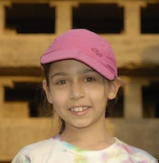

Welcome to the first comprehensive documentation of the Ellora cave temples of India.
ENTER THE CAVES
Ellora is a site of outstanding cave temples, datable between c. ad 575 and the end of the 9th century, 20 km north of Aurangabad in the Sahyadri Hills, Maharashtra, India. The caves were excavated from volcanic rock along a 2-km stretch of west-facing embankment. There are 34 major caves, numbered consecutively rather than chronologically, starting with the Buddhist group (Caves 1-13) in the south. Other groups are dedicated to the Brahmanical pantheon (Caves 14-29) and to Jainism (Caves 30-34). The most notable monument is Cave 16, the Kailasa Temple, which represents the culmination of rock-cut architecture, with huge sculptural reliefs heightening the overall symbolism of the temple as cosmic mountain and as the home of Shiva.
Dr. Deepanjana D. Klein and Dr. Arno Klein have digitized their unique archive of photographic documentation of the more than 30 rock-cut cave temples at Ellora. The approximately 2,500 black-and-white and approximately 4,500 color photographs of the Buddhist, Hindu and Jain cave shrines at Ellora have been identified and annotated and have been made available on the website.
This project has received funding from ArtStor and the Indian government.
| Dr. Deepanjana Klein is the International Head of Department for Modern and Contemporary Indian Art at Christie's. Prior to joining Christie's she curated exhibitions of contemporary Indian art as an independent curator in New York City. Deepanjana has a Ph.D. in Indian Art History from De Montfort University in England and has taught art history, theory, and aesthetics at the Leicester School of Architecture in England and at the Kamla Raheja Vidyanidhi Institute for Architecture and Environmental Studies in Mumbai. Her publications include contributions to the Encyclopaedia of Sculptures on the topics of modern and contemporary Indian sculpture (Fitzroy Dearborn Publishers, 2004) and essays on contemporary Indian art. She is the recipient of several awards, including a grant from the Mellon Foundation (ArtStor) for photo documentation of the Ellora cave temples, the J.N. Tata Endowment for the Higher Education of Indians, and the Nehru Trust for the Indian Collections at the Victoria & Albert Museum. | |
| Arno Klein took the 7,000+ photographs of the Ellora caves, constructed a database for the photographs and designed this website and accompanying web applications for annotation. Arno joined Sage Bionetworks in 2014 as the Director of Neuroimaging, where he is currently working on projects related to biomedical imaging, mobile health, and open science. | |
 |
Tristan Bruck joined the team in 2011 to work on the ground plans of the caves and has been responsible for assigning coordinates for each sculpture on all the floorplans. Tristan is a Specialist at Christie's. Prior to joining Christie's, he worked at The Pace Gallery in New York. Tristan holds a Bachelor's degree in Art History from Wesleyan University and furthered his studies at the School of Oriental and African Studies in London. He holds a Master's degree in Modern Art, Connoisseurship, and History of the Art Market from Christie's Education in New York. |
|  | Ellora Klein was in third grade when she assisted in the photography of the caves. She is engaged in many activities, including reading, running, racquetball, and art. |
 |
We would like to give our great friend and mentor, Professor Walter Spink, our sincerest gratitude! |
 |
Return to the Caves |